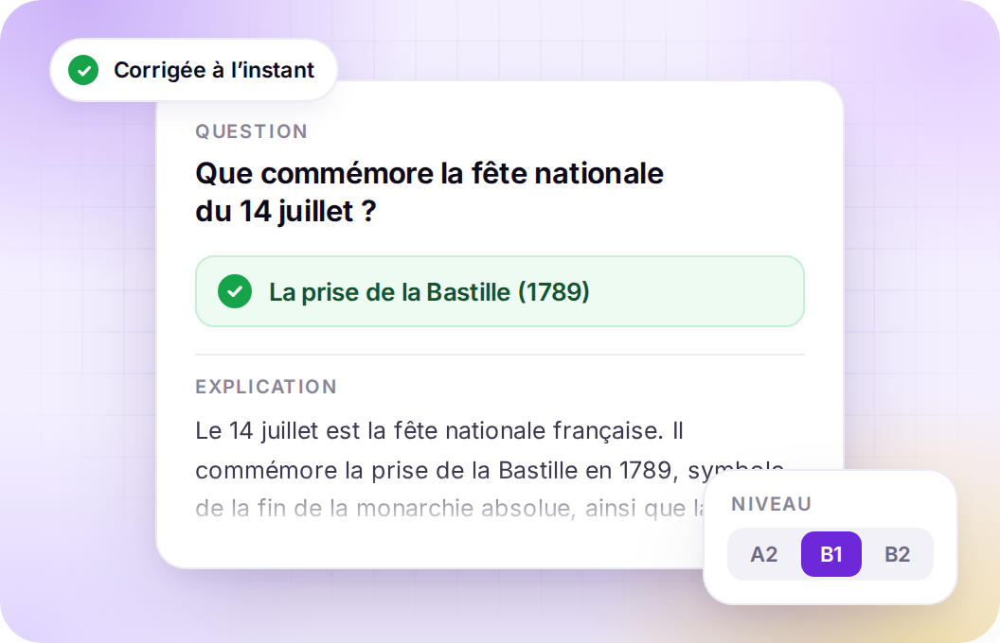
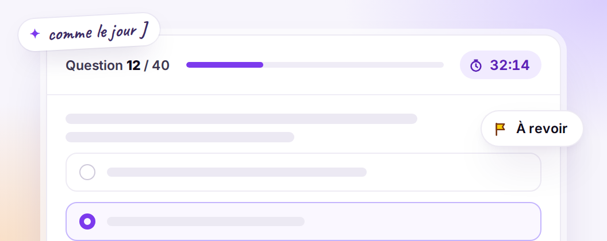
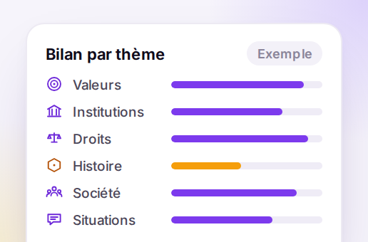
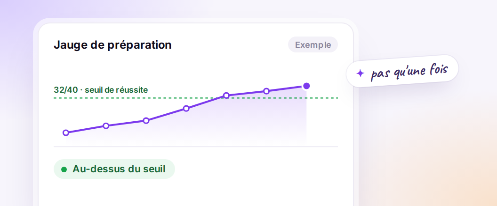
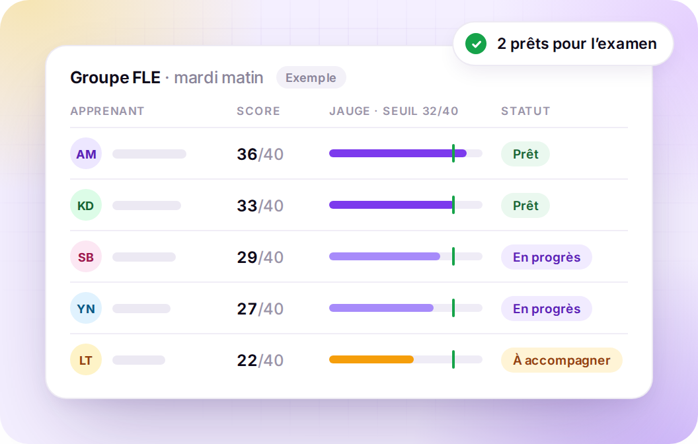

|
|
Examen civique · FLE, insertion, primo-arrivants
L’examen civique est obligatoire.
Votre préparation est prête.
Depuis le 1er janvier 2026, pas de carte de séjour pluriannuelle, de carte
de résident ni de naturalisation sans l’attestation de l’examen civique. CiviCap entraîne
vos apprenants à l’obtenir.
|
|

|
Ce que CiviCap fait à votre place
Il fait passer les examens blancs, corrige chaque réponse et montre à chacun où il en est.
Vos formateurs gardent leur temps pour enseigner.
|
 L’examen blanc, comme le vrai 40 questions en 45 minutes, avec les règles de l’examen officiel. Vos apprenants découvrent l’épreuve avant le jour J, pas pendant. |
 Le bilan par thème Les six thèmes du programme officiel, un par un : où l’apprenant décroche, et quoi revoir ensuite. |
|
 La jauge de préparation Elle montre quand l’apprenant obtient régulièrement 32/40, le score exigé à l’examen. Il s’inscrit quand il est prêt. |
|
|
Côté formateur
Pilotez la progression de chaque apprenant
Pour chacun, son dernier score et sa position face au seuil de 32/40. Vous savez qui
présenter à l’examen, et qui accompagner.
|
|

|
|
835 questions officielles · trois parcours
235 Carte de séjour pluriannuelle | 257 Carte de résident | 343 Naturalisation |
|
Pour votre organisme
Ajoutez vos apprenants quand vous le voulez, au fil des entrées en formation. Chacun
s’entraîne dès son arrivée.
|
|
|
Se désabonner
· [Raison sociale, adresse postale]
|